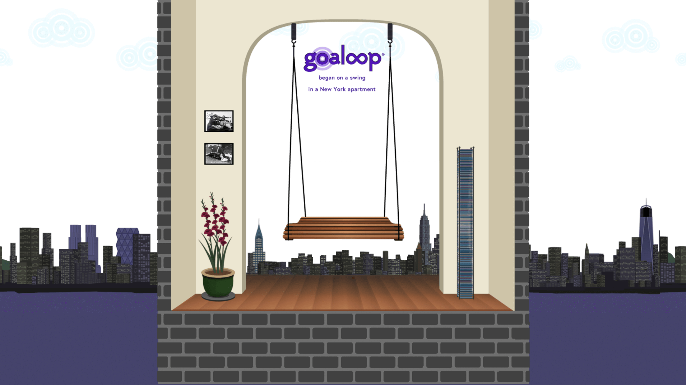
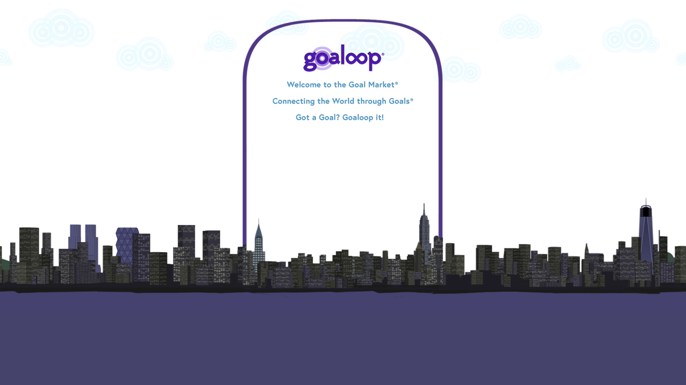

Lori Terrizzi is the CEO/Founder and Site Architect of GOALOOP - The Goal Market®, Connecting the World through Goals®. Terrizzi holds an MFA from Columbia University in Film and is a Phi Beta Kappa graduate of Rutgers College, where she was awarded the Vanderbilt Scholarship for the Study of Art & Music. Goaloop is the product of her life-long focus on freedom, issues of identity, and study of the relationship between words and images, form and content, equity and ability, truth and memory, power and substance, one of us and all of us.
Founding client of Yale Law School's Entrepreneurship & Innovation Clinic, Goaloop is patent pending and answers a fundamental question: Will today's interconnectivity become a web of surveillance that traps us as prey, or a trellis that supports growth toward fulfillment? Goaloop ensures the latter: a personal trellis for each of us, connected to build a better world for everyone. Goaloop helps you reach your goals and connects the world through goals.
Goaloop is an outgrowth of Terrizzi's prior position as Executive Director of the non-profit organization of writers aiding writers, founded by author and Board Member Salman Rushdie, continuing the work of the International Parliament of Writers in the United States. Principally working with the organization's VP, Board Member Caryl Phillips, the Board of Directors also included President Russell Banks, Carolyn Forché, Jayne Cortez, Derek Walcott, Michael Ondaatje, Dionne Brand, and Wole Soyinka, with Advisory Board Members Toni Morrison and Margaret Atwood.
While protecting the creative freedom of artists writing in dozens of languages, the Internet was becoming a new 'language.' "Scaling" entered the lexicon. What were we scaling? Would it turn everyone into a 'persecuted writer?' How could we rewrite the semiotics of the Internet to help everyone achieve freedom?
These questions dovetailed with the collapse of Lehman Brothers, where Terrizzi had previously worked, provoking her imagination to conceive a new, accessible, transparent market. While at Lehman, she worked on a project with Ernest Green of the Little Rock Nine, whose transition from the non-profit sector to Wall Street made a lasting impression. She then produced for American Movie Classics on a weekly television show awarded the Emmy® for Best Series in its category for two consecutive years, before founding a non-profit film platform on the eve of YouTube, mentored by Carnegie Corporation president Vartan Gregorian. Terrizzi channeled these experiences to design Goaloop – The Goal Market®, a new cross-sector marketplace where the only cost of entry is a goal – and where every goal becomes a Govie™, an automatic 'goal movie.'
As VP of the new James Baldwin Society at Rutgers, Terrizzi began writing Mr. Baldwin a letter. He had agreed to attend the inaugural meeting; he died two months before. The letter remained unfinished – until Terrizzi completed it in a forthcoming video that tells Goaloop's origin story. The James Baldwin Estate granted Terrizzi permission to include an interview of Mr. Baldwin in this video, "Goaloop – Street of Dreams," which includes two screens:
"The framework in which we operate weighs on us too heavily to be borne and is about to kill us." – James Baldwin, 1963
"Dear Mr. Baldwin, We have grown a new framework. Love, Goaloop"
The story "Raising Liberty: The Construction of the Statue of Liberty as Reconstruction Was Under Attack" served as a metaphor for the construction of Goaloop and can be read here; it is being made into a movie.
The granddaughter of Armenian Genocide survivors and Sicilian immigrants, and the daughter of first-generation professors, Terrizzi was raised in Amherst, Massachusetts, and now resides in New York City.